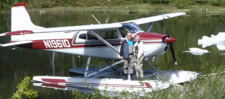

About Us
The view from the Fishermen’s Inn private floatplane! This is Port Alexander, Alaska. You can see the homes and lodges that make up the tiny town. There are no roads to this place! And there is a boardwalk rather a road in town.
Kevin and Karen Mulligan have been operating Fishermen’s Inn out of Port Alexander, Alaska for fifteen years. The emphasis of their business is to show others a quality experience in the beautiful country that they live. Port Alexander is a remote village 65 miles south of Sitka on Baranof island. Karen is a wonderful cook, she works hard all day making guests feel at home with full bellies. She of course keeps the lodge orderly whith all it’s fishing gear and handles all the book keeping and such. Kevin is a licensed commercial pilot, a heck of a fishing guide, and takes on the maintenance of their island paradise.
The lodge owners Karen and Kevin work closely with Glen and Shanna Smith that operate Chatham Strait Charters. Glen handles all the saltwater charter fishing for the Fishermen’s Inn Lodge. Shanna carefully bags and processes your fresh caught fish to be blast frozen for the guests’ return trip. Shelsea Smith helps Karen cooking and cleaning at the lodge and currently attends UofA, in Juneau.
Fishermen’s Inn offers a very unique experience! With their own float- plane, a Cessna 185. Kevin provides air transportation to the lodge and transports guests into beautiful remote places. Guests can hike, fish and explore places that few people will ever see. Kevin is the only person with a permit from the US Forest Service to fly into wilderness areas and guide people on the South Baranof Wilderness lakes. This translates to the possibility of an amazing experience for YOU!
Guests of Fishermen’s Inn can go out saltwater fishing with Chatham Strait Charters, take out kayaks, walk the beaches, and go fishing unguided in one of their two welded aluminum skiffs. The fishing with the capability of the floatplane is amazing. Fly-fish some of the most pristine rivers, lakes, and streams in Alaska! All fish processing, vacuum packing and blast freezing is of course done on-site in our facility.
Fishermen’s Inn provides wonderful family style meals, clean, comfortable rooms, robes for the hot tub, internet, satellite tv and phone. All of this on a private ocean front lot that’s sixty five miles from the end of the road.
Fishermen’s Inn provides MANY years of Alaskan experience. Kevin homesteaded land in Port Alexander in 1974 when he was 17, commercial fished southeast Alaska for 28 years and has been a commercial instrument rated bush pilot for 16 years. Kevin and Karen have been married for 29 years. They raised two wonderful sons, Justin and Ryan. Karen has lived the Alaskan homestead lifestyle. She commercial fished for over twenty years, cared for her three boys, cooked, cleaned and kept the family in line. Their children are a testament of the incredible people their parents are.